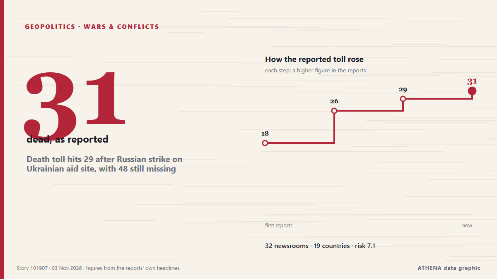

Death toll hits 29 after Russian strike on Ukrainian aid site, with 48 still missing

KYIV, Ukraine, Nov 3, (AP): The death toll from a Russian attack in southern Ukraine where people had gathered to receive humanitarian aid rose to 29 on Tuesday, with 48 still m... from Arab Times
Reported independently by 32 outlets in 19 countries since 2 Nov, first by Kyiv Independent; coverage is still spreading. ATHENA rates the risk high (7.2/10), driven mainly by the severity of the harm described and its geographic and sector reach. Confidence is 88% (high), with 32 independent outlets corroborating it and an average source reliability of 75%. Newsrooms by country: United Kingdom (7), United States (4), Malaysia (3). Coverage: 2 Nov to 3 Nov, 22 hours.
Why it matters: Russia's full-scale invasion of Ukraine began in February 2022. This tracker follows the fighting, strikes on infrastructure and the diplomacy around the war, as covered by newsrooms around the world.
What changed: 39 new reports from 32 newsrooms in the 24 hours to 3 Nov.
First reported as: Russian attacks increase Ukraine's need for foreign aid, Bloomberg report finds
At a glance
Selected, scored and written by ATHENA's published methodology. No editor intervenes in individual events. How this is produced ›
| 02 Nov 13:36 UTC | 1 |
|---|---|
| 02 Nov 14:36 UTC | 0 |
| 02 Nov 15:36 UTC | 0 |
| 02 Nov 16:36 UTC | 0 |
| 02 Nov 17:36 UTC | 3 |
| 02 Nov 18:36 UTC | 6 |
| 02 Nov 19:36 UTC | 6 |
| 02 Nov 20:36 UTC | 2 |
| 02 Nov 21:36 UTC | 2 |
| 02 Nov 22:36 UTC | 2 |
| 02 Nov 23:36 UTC | 2 |
| 03 Nov 00:36 UTC | 6 |
| 03 Nov 01:36 UTC | 1 |
| 03 Nov 02:36 UTC | 0 |
| 03 Nov 03:36 UTC | 1 |
| 03 Nov 04:36 UTC | 0 |
| 03 Nov 05:36 UTC | 0 |
| 03 Nov 06:36 UTC | 1 |
| 03 Nov 07:36 UTC | 0 |
| 03 Nov 08:36 UTC | 0 |
| 03 Nov 09:36 UTC | 2 |
| 03 Nov 10:36 UTC | 3 |
| 03 Nov 11:36 UTC | 1 |
| 02 Nov 14:21 UTC | 4.1 |
|---|---|
| 02 Nov 18:55 UTC | 4.7 |
| 02 Nov 19:13 UTC | 5.6 |
| 02 Nov 19:58 UTC | 6.3 |
| 02 Nov 23:11 UTC | 6.2 |
| 03 Nov 02:04 UTC | 7.0 |
| 03 Nov 11:41 UTC | 7.2 |
Why these numbers
Importance
Risk
Confidence
The reporting — who reported it, and when
headline as published · opens the original- Kyiv Independent · UkraineRussian attacks increase Ukraine's need for foreign aid, Bloomberg report finds
- Asharq Al-Awsat (English) · Saudi ArabiaUkraine Says Russian Strikes on Aid Distribution Point Kill 18
- Al Jazeera English · QatarRussian strike on Ukraine aid hub kills 26 as US announces new peace talks
- ABC News Australia · AustraliaRussian strikes on Ukrainian shelter and aid centre kill 24
- The Irish News (Belfast) · United KingdomRussian bomb attacks on aid centre and shelter kill 26, Ukrainian officials say
- Belfast Telegraph · United KingdomRussian bomb attacks on aid centre and shelter kill 26, Ukrainian officials say
- BBC News · United KingdomRussian bombing kills 29 people at Ukraine aid centre, Kyiv says
- Courthouse News · United StatesUkraine says Russian strikes dash peace progress hopes after more than 20 killed
- Kyiv Independent · UkraineUkraine war latest: Russian bomb strikes kill 24 at humanitarian aid center in Zaporizhzhia Oblast
- TRT World · TurkeyRussian strikes on aid distribution point kill 18 in Ukraine: Kiev
- SBS News · AustraliaUkraine says Russian strikes dash peace progress hopes after 26 killed
- The New York Times (World) · United StatesRussian Strike on Ukraine Humanitarian Hub Kills Dozens
- Arab News · Saudi ArabiaRussia bombs aid center and shelter in southern Ukraine, killing 24, authorities say
- The New Arab · INTRussian strikes kill 26 in Ukraine, dashing peace progress hopes
- Livemint · IndiaUkraine Says Russian Strike on Humanitarian Aid Center Kills 24
- CNA (Channel NewsAsia) · SingaporeUkraine says Russian strikes dash peace progress hopes after 24 killed
- Free Malaysia Today · MalaysiaUkraine says Russian strikes dash peace progress hopes after 26 killed
- DW English · GermanyUkraine: At least 26 killed in Russian strikes on aid center
- TheJournal.ie · IrelandRussian bomb attacks on aid centre and shelter in southern Ukraine kill 26 people
- TRT World · TurkeyUkraine says Russian strikes kill 26 people, dashing hopes for 'progress toward peace'
- MyJoyOnline · GhanaRussian bombing kills 26 people at Ukraine aid centre, Kyiv says
- Xinhua (English) — page reader · ChinaUkraine says 18 killed, 27 missing in Russian aerial strike
- New Straits Times · MalaysiaUkraine says Russian strikes dash peace hopes after 26 killed
- Malay Mail · MalaysiaRussia strikes kill 26 in Ukraine, dealing fresh blow to peace hopes
- The Korea Times · South KoreaRussia bombs aid center and shelter in southern Ukraine, killing 26, officials say
- The Guardian · United KingdomRussia bombs humanitarian hub in Ukraine, killing at least 31 people
- Ada Derana · Sri LankaRussian bombing kills 26 people at Ukraine aid centre, Kyiv says
- Al Jazeera English · QatarMultiple Russian strikes kill at least 26 at Ukraine aid centre
- France 24 English · FranceRussian strikes kill at least 26 in Ukraine after war's longest ceasefire ends
- Times of India · India26 killed as Russia strikes Ukraine school used for aid distribution
- The Independent · United KingdomUkraine-Russia war latest: UK and European forces ‘will shoot back at Russians if provoked’ on peace mission
- People Daily · KenyaRussian strike kills 26 people at aid centre in Ukraine, Kyiv says
- Arab Times · KuwaitDeath toll hits 29 after Russian strike on Ukrainian aid site, with 48 still missing
- ABC News (International) · United StatesDeath toll hits 31 after Russian strike on Ukrainian aid site, with dozens still missing
- France 24 English · FranceDozens killed, dozens more missing after Russian strike on Ukrainian aid site
- NPR · United StatesDeath toll hits 29 after Russian strike on Ukrainian aid site, with 48 still missing
- The Independent · United KingdomRussian strike on school kills at least 31 in Ukraine village
- The Irish News (Belfast) · United KingdomDeath toll from Russian attack on aid centre rises to 31, officials say